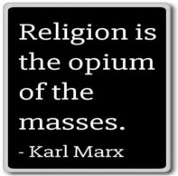

1845 John Henry Newman defends the authority of the church. One can know God only through self- denial and obedience, to which the Church is an indispensable guide. World history is moved by divine activity in a continuing revelation. Catholics must trust that the church is infallible.
1847 Horace Bushnell: Doctrines of sin and salvation cannot be dismissed; one must read the bible as inspiration and a poetic form of life, as different branches pointing at the same truth; doctrines evolve.
1848 Marx Religion is a false consciousness by which people delude themselves to cope with oppression; it is a psychological and social, rather than divine, phenomenon. Feuerbach's reversal of Hegel is an important step, but Feuerbach is mistaken in his view that the power of thought can change human life; Marx has an entirely materialistic interpretation: human emancipation will occur when we overcome the split between citizenship and civil society. The Communist Manifesto is issued in 1848, as anti- monarchical revolutions rock Europe, proclaiming the need for a proletarian revolution from below. The movement of history is not a matter of thought, but of human productive activity. Philosophers interpret the world; the point is to change it. Feuerbach thought of religion as a form of illness, splitting us in two; for Marx, religion is only a symptom - the sickness is inequality and oppression; religion is a palliative, the opium of the people, to make us forget how miserable we are, a false consciousness shaped by forces that it hides from itself. We must look below the surface to social material biological dynamics.

1852 Ritschl is a spokesman for liberal Protestants and modernist Catholics: there is no conflict between modernism and religion; doctrines are mere poetic expressions of religious experience. Ritschl, a Kantian considers Jesus the embodiment of ethical calling; divine grace is a spiritual freedom that makes moral action possible in the context of Christian tradition. Jesus’ ethical work justifies the Christian community. Salvation can come only through Jesus; Protestantism is the consummation of God's plan.
1865 The Salvation Army is founded to bring salvation to the poor, destitute, and hungry by meeting both their "physical and spiritual needs,” running charity shops, and operating shelters for the homeless.
1869 Modern “Christianity”: In order to appeal to a broader spectrum, and especially vibrant masculinity, religions compromise core values - "turning the other cheek" is replaced by a muscular embrace of military expansionism; serving the poor is replaced by "Acres of Diamonds."
1869 Ultramontanists - Catholic Anti-modernists give greater authority to the Pope. In 1854 Pius IX declares the teaching of the Immaculate Conception without consulting bishops; in 1864 he publishes The Syllabus of Errors condemning secularization and political liberalism; in 1869 the First Vatican Council declares him infallible based on Mt 16:18. In 1870, in answer to threats from secularization, Aquinas is declared to be the foundation of dogma.
1870 Bruno Bauer: Jews will be emancipated only when religion is abolished; the state offers us freedom in the abstract: Paul says there are neither slave nor free, neither male nor female, yet he supported slavery and subordination of women; the state makes us equal as citizens, yet allows deep inequalities; consciousness mystifies and ritualizes the social origins of alienation and domination.
~~~~~~~~